F-15C SIT Pilot Manual
How to fly with the F-15C SIT (WW) add-on v1.0: the SIT page and its menu pages on the lower-left MPCD of the Flaming Cliffs F-15C.
Before you fly
You need DCS World with the F-15C from Flaming Cliffs. Nothing else is required; SRS is used by the RADIO page if you have it.
Install
- Close DCS.
- Unzip the download so the folder sits at
Saved Games\DCS\Mods\tech\F-15C SIT (WW). - Double-click
INSTALL.batin that folder. It copiesF15SIT_Export.luaandHooks\F15SIT_hook.luaintoSaved Games\DCS\Scripts, adds one line toExport.luaand adds the add-on's controls to the F-15C's controls file in your DCS install (ED's file is kept in the add-on'sbackupfolder).
After every DCS update or repair run INSTALL.bat again: DCS puts its own controls file back and the add-on's controls disappear until you do. Your own key assignments are kept and come back with them.
If the installer cannot find your DCS install, run it from a command prompt in the add-on folder: INSTALL.bat -DcsPath "D:\DCS World". With DCS under C:\Program Files, right-click INSTALL.bat > Run as administrator.
Remove: UNINSTALL.bat takes the controls, the Export.lua line and the scripts out again; then delete the add-on folder.
Controls: Options > Controls > F-15C, category F-15C SIT. Bind at least the castle switch (up, down, left, right). See HOTAS and keybinds for the full list.
Power and start-up
The MPCD runs on the jet's power. On a cold start it stays dark until you switch on the electric power or an engine is running. It then runs a short self test (MPCD, SELF TEST, GO; about 3 seconds) and opens on the DTM page, so you can load your cartridge first. Hot and air starts come up running, on the SIT page.
With power on and the engines still off, every page works: you can tune the radios before engine start.
Below the display
- OFF / NIGHT / DAY knob: left click turns it toward OFF, right click toward DAY. OFF switches the display off; turning it back on runs the self test again. NIGHT is about a third of DAY's brightness.
- BRT rocker: left click brighter, right click dimmer, ten steps.
Without power, the add-on's buttons and keybinds do nothing. While the display is off or starting, its buttons and the SIT page's HOTAS functions wait; the radio, countermeasure and jettison binds keep working as long as the jet has power.
The bezel and moving between pages
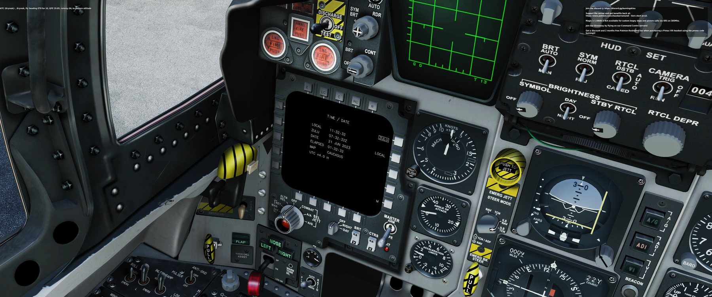
Twenty buttons around the display, five on each side: top T1–T5 (left to right), bottom B1–B5, left L1–L5 and right R1–R5 (top to bottom). Each page labels the buttons it uses next to them. All of them are clickable and can be bound (category F-15C SIT, "MPCD Lower Left").
MENU (R5 on the SIT page, the M button on the other pages) leads everywhere:
| Button | MENU page |
|---|---|
| T1 | CRS STR: course line from the ownship to the active steerpoint on SIT |
| T2 | RADIO |
| T4 / T5 | ENTER NET / RESET IPF (datalink net entry messages) |
| L1 | ARMT (A/A page) |
| L2 | BIT |
| L3 | SIT |
| L4 | WPN (A/G weapon video, no video in the C) |
| L5 | DTM |
| R1 / R2 / R3 | TIME DATE / OWN DATA / FLIGHT DATA |
| R4 | SIT SET (SIT settings) |
| B1, B2 / B4 | Voice channel, up / down |
| B5 | AUTO RANGE on / off |
The castle switch also moves between pages: right on the radar (VSD) cursor opens the A/A page, left on the A/A page goes back to SIT, and castle up always brings the SIT page with the cursor.
SIT page
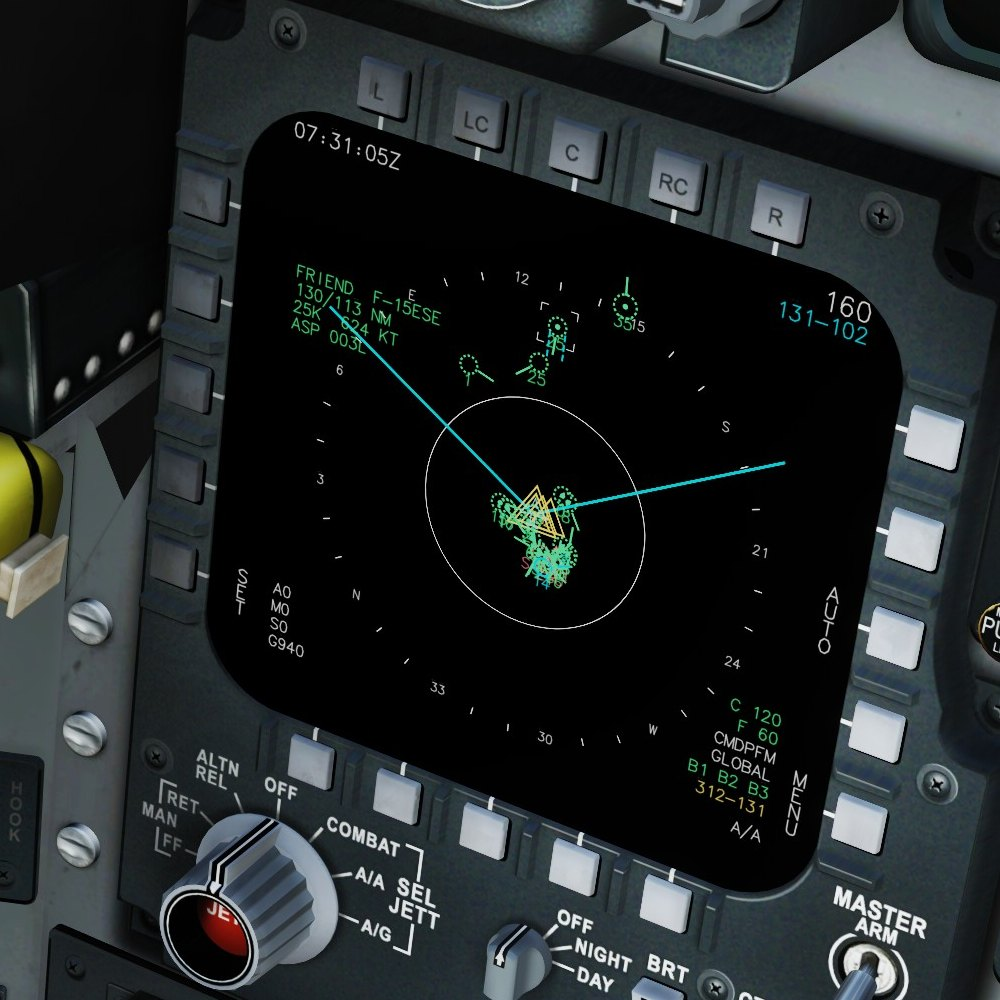
- Top left: time (Zulu or local, set on TIME / DATE). With the cursor on a contact: its data block (identity and name, bearing / range, altitude in thousands of feet and speed, aspect).
- Top right: the range in NM from your jet to the top of the SIT area; below it in cyan the cursor's bearing and range from you (no cursor: the active steerpoint).
- Cyan lines: the edges of your radar's scan, out to its range scale.
- Left: L5 SET opens SIT SETTINGS; below it your missiles (A AIM-120, M AIM-9, S AIM-7) and gun rounds (G).
- Right: R3 AUTO / MAN range, R5 MENU. Bottom right: chaff (C) and flares (F), the selected CMD program, RWR filter, ICS bands, the bullseye readout in yellow (the cursor from the bullseye) and the master mode.
Symbols
| Symbol | Meaning |
|---|---|
| green circle | Friendly. Solid: on your radar; dotted: datalink only. A dot inside: AWACS (large circle) or a friendly datalink fighter. |
| red triangle | Hostile, pointing along its course. Solid: on your radar; dotted: datalink. |
| white square | Unknown: not identified. Solid: on your radar only; dotted: datalink. |
| cyan circle + number | Your flight members (see FLIGHT DATA). |
| course tick, number | A short line shows where a moving contact is heading; the number below is its altitude in thousands of feet. |
| white brackets, blue line | The target your radar is locked on, and the line from you to it. |
| red ring, label | Enemy SAM site and its engagement ring (brighter while you are inside it). |
| yellow triangles, line | Your route; the active steerpoint has a second, larger triangle. |
| yellow double circle | Bullseye. |
| cyan lines, labels | Mission drawings or your cartridge's lines (FLOT, borders, areas, rings). |
| missile mark, line, A 23 | Your missile in flight, the line to its target, and the seconds to impact. |
| x, M1 045/12 | Mark point with its number and bearing / range from you. |
Range and view
- Centred: 5, 10, 20, 40, 80, 160 NM to the top of the area. Decentred (castle right while the SIT page has the cursor): your jet moves down and the steps become 7, 15, 30, 60, 120, 240 NM.
- Change the range with
SIT Range Increase / Decrease, with the radar's zoom keys while the SIT page has the cursor, or by pushing the cursor into the top or bottom edge. AUTO (R3) makes the range follow the radar's range scale. - EXP (castle left with the cursor): 10 NM around the cursor. F5 (castle down): 5 NM around your formation.
The cursor
Normally the SIT page's cursor shows where the radar (VSD) cursor is. Castle up gives the cursor to the SIT page (it turns solid): the jet's TDC slew now moves it across the SIT page and the radar cursor stays where it is. Castle up again, or leaving the SIT page, gives it back to the radar. SIT Cursor keys and axes move it too.
Put the cursor on a contact for its data block. SIT Mark Point drops a mark at the cursor (or under you without one); SIT Delete Mark Point removes the mark nearest the cursor, else the newest.
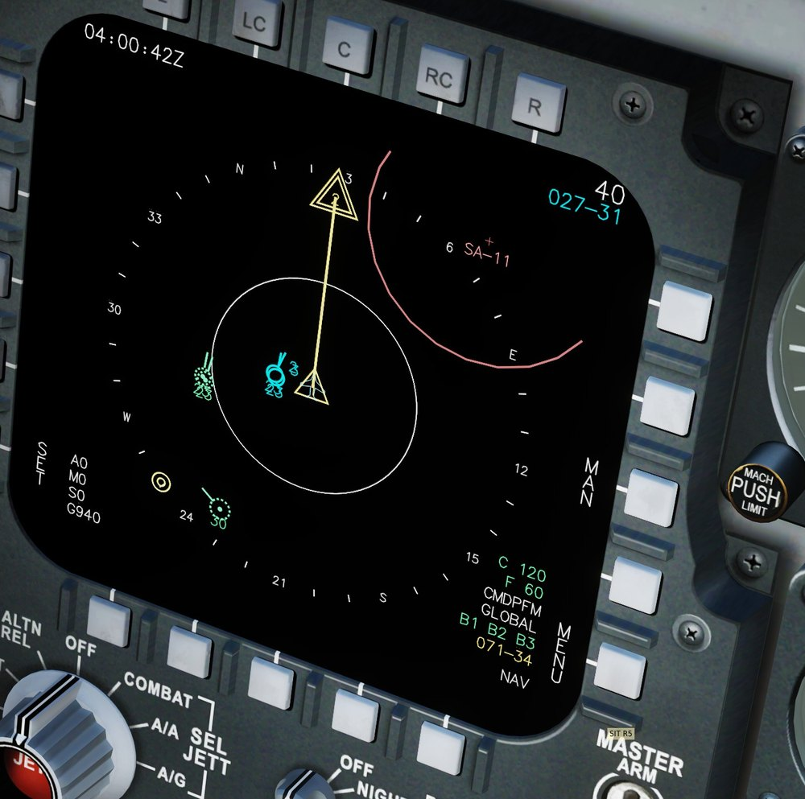
Declutter (SIT Declutter keybind, or SIT SETTINGS R2) steps through FULL, NO LINES (no route, drawings, course line), NO DATA (no texts by the symbols), NO RINGS (no threat rings) and MIN (no radar scan lines). A short popup shows the step.
Where the picture comes from: your own radar every second; friendlies within 300 km; hostiles that a friendly AWACS, EWR, ship or datalink fighter could see, with their range, radar horizon and the terrain in between; enemy SAM sites once a friendly aircraft could pick up their radar. The AWACS picture is refreshed every 6 seconds and drawn where the contacts were, moved along their course. On servers that block this, see Datalink and servers.
SIT settings
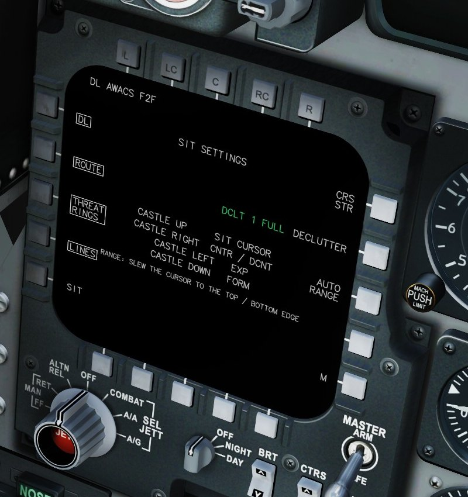
- Top left: datalink status:
DL AWACS F2F(AWACS / EWR and fighter datalink),DL OWN(own radar only),DL EWR REPORTS,DL OFF (SERVER)orNO DL. - L1 DL, L2 ROUTE, L3 THREAT RINGS, L4 LINES: switch those layers on and off (boxed = on).
- R1 CRS STR: course line to the active steerpoint. R2 DECLUTTER: next step. R3 AUTO RANGE.
- The middle of the page lists what the castle switch does on the SIT page.
A/A, combat jettison and weapon load
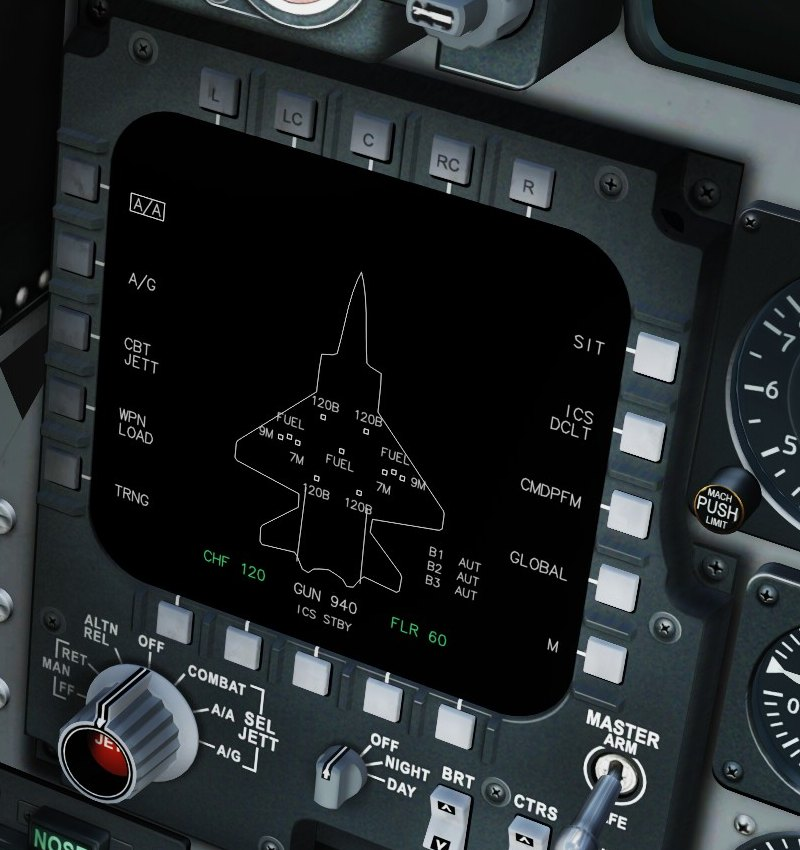
- The aircraft outline with each station's store; the selected station is filled. Chaff (CHF) and flares (FLR), gun rounds, ICS (jammer) state and bands B1–B3.
- L3 CBT JETT, L4 WPN LOAD (a list of every station), L5 TRNG, R1 SIT, R2 ICS DCLT.
- R3 shows the selected CMD program (
CMDPFM); pressing it opens CMD programs. R4 steps the RWR filter message (GLOBAL ...).
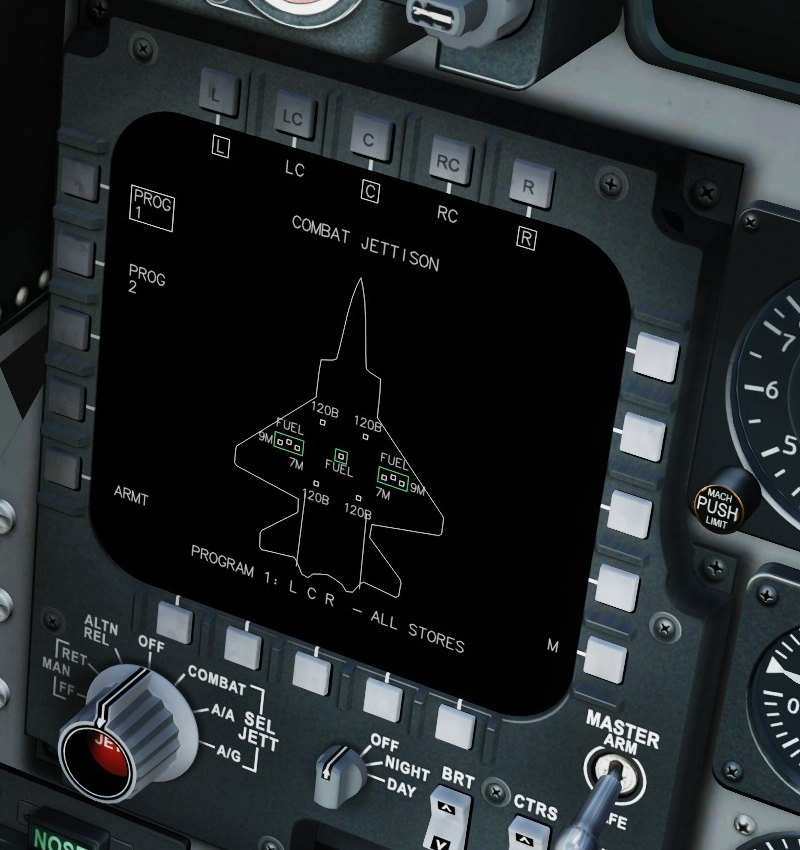
Two programs (L1 PROG 1, L2 PROG 2). T1–T5 select the station groups L, LC, C, RC, R. Combat Jettison (keybind) jettisons the active program. Flaming Cliffs can only drop the fuel tanks or all stores at once: a program whose stations hold only tanks drops the tanks, any other drops all stores; the bottom line tells you which.
CMD programs
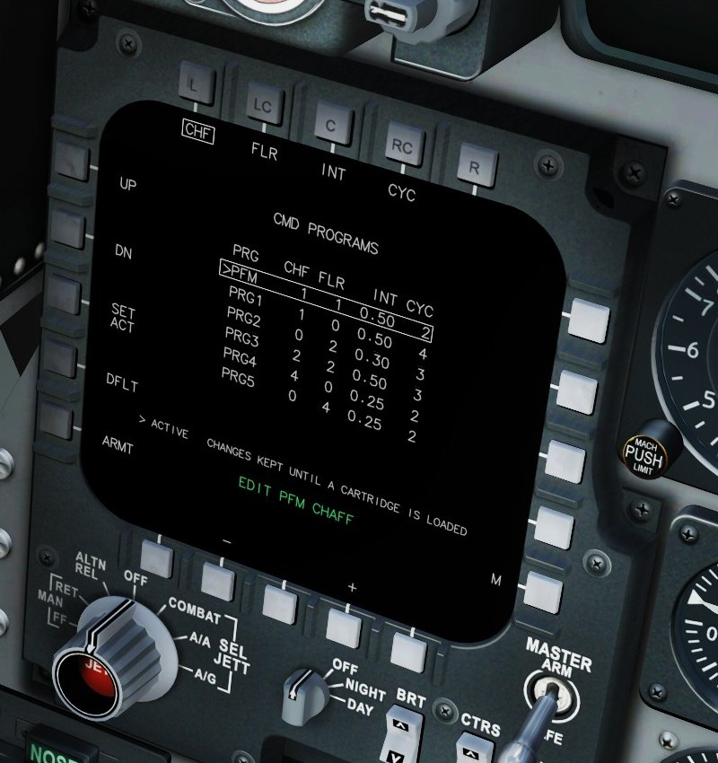
- Six programs, PFM and PRG1–PRG5: chaff and flares per release, interval (s) and cycles.
- L1 UP / L2 DN select a row, T1–T4 select the field (CHF, FLR, INT, CYC), B2 – / B4 + change it. L3 SET ACT makes the row the active program, L4 DFLT resets the row.
- Changes are kept until you load a cartridge (which can carry its own programs).
- Keybinds:
CMD - Dispense selected programruns the active program,CMD - Next programselects the next one.
RADIO
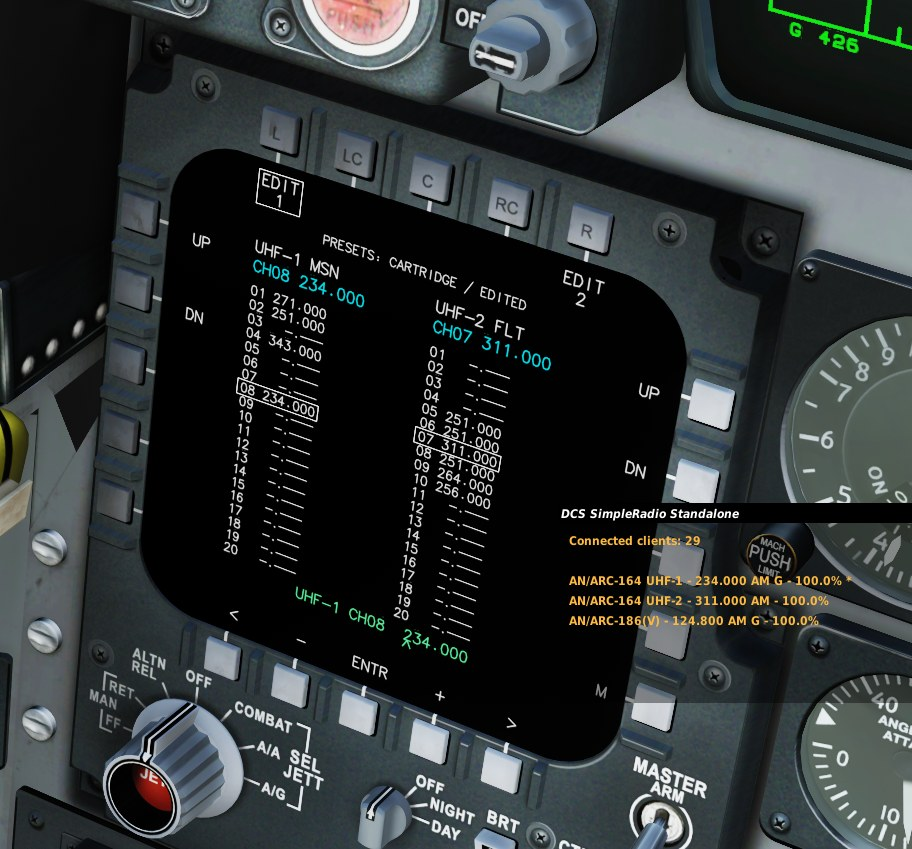
UHF-1 (mission comms, SRS radio 1) on the left, UHF-2 (flight, SRS radio 2) on the right, 20 presets each. The presets come from your cartridge, else from the mission for your aircraft; the line at the top says which.
- L1 UP / L2 DN step UHF-1, R1 UP / R2 DN step UHF-2. SRS tunes to the new channel at once.
- Keybinds:
UHF-1 Channel Up / Down,UHF-2 Channel Up / Down(they work from any page). - T1 EDIT 1 / T5 EDIT 2 change the selected channel's frequency: B1 < and B5 > pick the digit, B2 – and B4 + change it, B3 ENTR stores it (225.000–399.975 MHz).
The add-on talks to SRS through SRS's UDP command port (9040 by default, in the SRS client's settings). It only works while SRS is running and connected.
DTM and cartridges
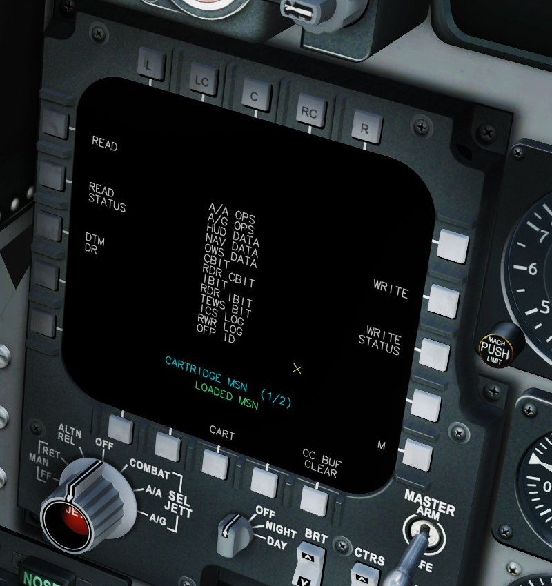
A cartridge is a .dtc file made with the DTM Planner, in Saved Games\DCS\DTC\F-15C (with its drawings in a .geo.txt file of the same name). MSN is the mission itself: the jet's route from the mission, the mission's bullseye and the mission drawings of your side.
- B3 CART steps through MSN and the cartridges for the current map; the line in the middle shows the choice.
- L1 READ loads it: route, bullseye, drawings, radio presets, CMD programs and jettison programs.
LOADEDshows the cartridge in use. - READ STATUS, WRITE, WRITE STATUS and CC BUF CLEAR are there for the look of the real page.
After a cold start the display opens here: pick your cartridge, READ, then go to SIT.
TIME / DATE, OWN DATA, FLIGHT DATA, BIT
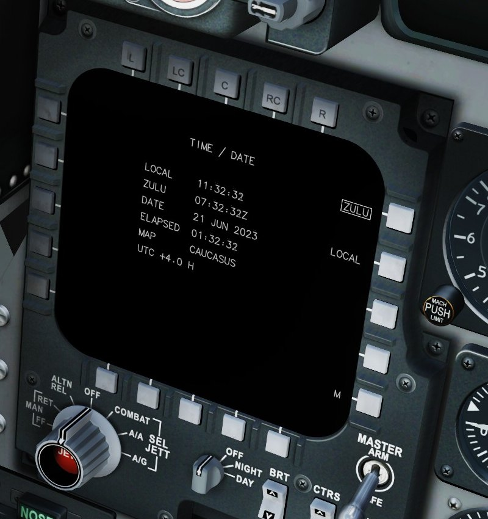
OWN DATA lists your callsign, pilot, track number, position, altitude, heading, speed, fuel, your position from the bullseye and the active steerpoint.
FLIGHT DATA
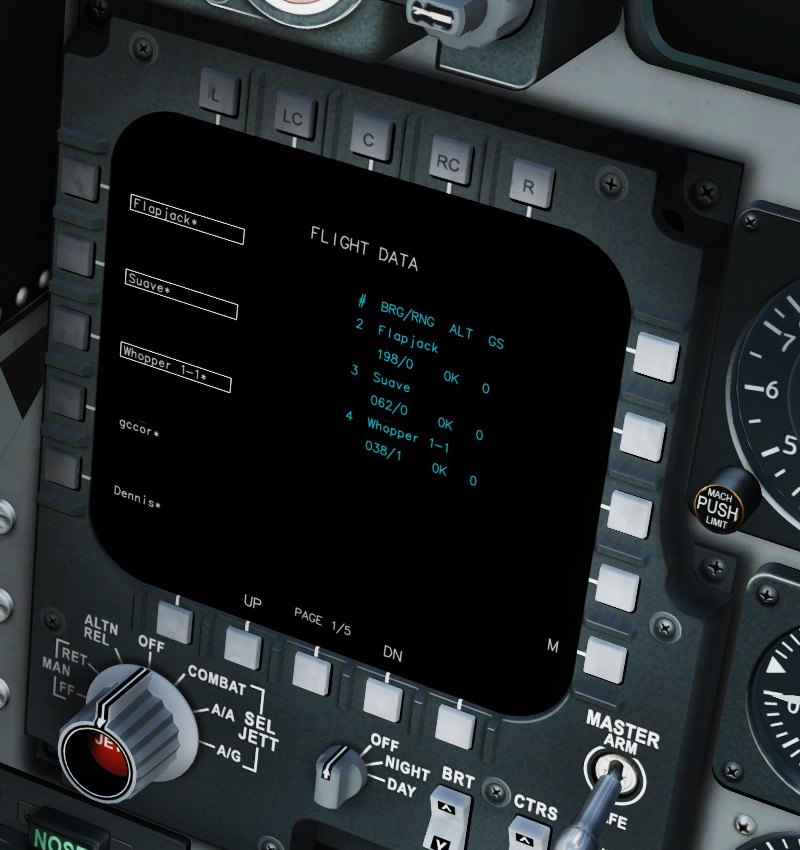
L1–L5 list the friendly aircraft near you, players first (marked *); B2 / B4 page through them. Press one to make it a flight member (boxed) or to drop it; the aircraft of your own group are members anyway. Members are numbered 2, 3, 4 ... (by unit name) and drawn in cyan with their number on the SIT page; the right side gives each one's bearing / range, altitude and ground speed. Your picks are remembered between flights.
BIT shows CBIT (continuous) or IBIT (a 6 second test) with the jet's failed systems as NO GO lines.
HOTAS and keybinds
Options > Controls > F-15C, category F-15C SIT:
| Control | What it does |
|---|---|
| Castle Switch - Up | The SIT page takes the cursor (and is shown); again: back to the radar |
| Castle Switch - Right | SIT cursor: decenter on / off. Radar cursor: A/A page |
| Castle Switch - Left | SIT cursor: EXP on / off. On the A/A page: back to SIT |
| Castle Switch - Down | SIT cursor: F5 (formation) on / off |
| SIT Cursor - Up / Down / Left / Right, Horizontal / Vertical (axis) | Move the SIT cursor (the jet's TDC slew does too) |
| SIT Range Increase / Decrease | SIT range one step (the radar's zoom keys too, while SIT has the cursor) |
| SIT Declutter (step) | Next declutter step |
| SIT Mark Point / Delete Mark Point | Mark at the cursor / remove the nearest mark |
| CMD - Dispense selected program / CMD - Next program | Run / select the countermeasure program |
| Combat Jettison (CBT JETT program) | Jettison the active jettison program |
| UHF-1 / UHF-2 Channel Up / Down - SRS | Step the radio presets |
| MPCD Lower Left - Top / Bottom / Left / Right 1-5 | The 20 bezel buttons |
Datalink and servers
The datalink picture is built by the add-on's export script from what DCS exports. In multiplayer the server decides: with object export allowed you get the full picture; with it blocked you get your own radar only, and the SIT SETTINGS status says DL OFF (SERVER).
Many servers that block export send EWR picture reports as text messages instead. The add-on reads them and draws their contacts on the SIT page (status DL EWR REPORTS), placed from where you were when the report came in and moved along their course for up to two minutes.
On busy servers the export spaces out DCS's unit scans by what they cost (every 2 to 6 seconds), and pauses them while no page that shows the picture (SIT, FLIGHT DATA, SIT SETTINGS) is on the display.
Using the DTM Planner
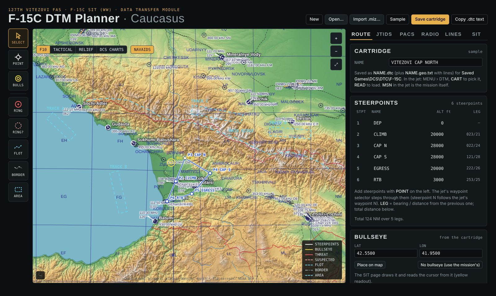
Open DTM Planner\F-15C DTM Planner.html from the add-on folder in your browser (or the online copy). It works offline; the maps are inside the file.
- Map tools (left): SELECT, POINT (steerpoints), BULLS, RING, RING? (suspected threat), FLOT, BORDER, AREA. Map layers: F10, TACTICAL, RELIEF, DCS CHARTS, NAVAIDS.
- ROUTE: cartridge name, steerpoints with names and altitudes (bearing / distance per leg), bullseye.
- PACS: CMD program and RWR filter at start, the six CMD programs, both combat jettison programs.
- RADIO: UHF-1 and UHF-2, 20 channels each, with names.
- LINES: the drawings: rings, FLOT, borders, areas.
- SIT: a preview of the SIT page from any steerpoint and range.
- Import .miz takes the route, bullseye and drawings from a mission file. Save cartridge downloads
NAME.dtcandNAME.geo.txt: put both intoSaved Games\DCS\DTC\F-15C.
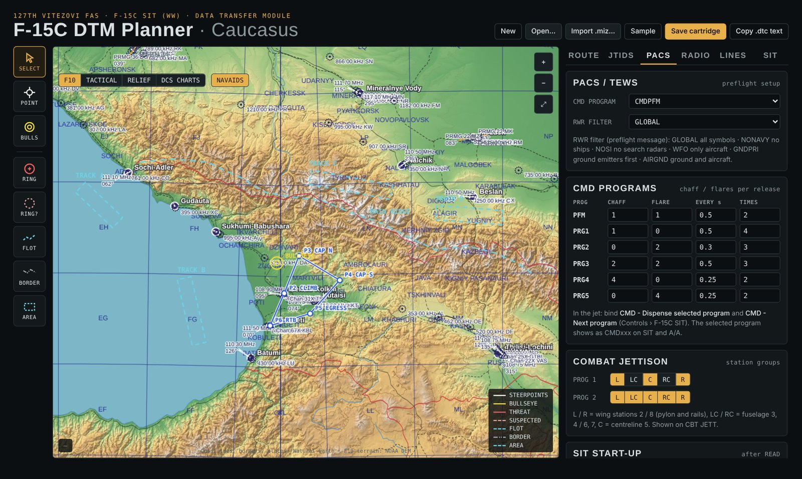
Options and troubleshooting
Options > Special > F-15C SIT
- F-15C SIT add-on: off gives you the stock F-15C; nothing of the add-on runs.
- Datalink: off shows only your own radar on the SIT page (no AWACS, flight or EWR contacts); everything else stays on.
- Timing and debug logs: for testing only; leave it off.
The add-on's controls are gone: DCS was updated or repaired. Run INSTALL.bat again.
The SIT page shows no contacts and says NO DL: the export script is not running. Run INSTALL.bat again; check that Saved Games\DCS\Scripts\Export.lua has the F-15C SIT line.
The radio page does not tune SRS: SRS must be running and connected, and its UDP command port must be 9040.
The display stays dark: switch on the electric power or start an engine, and check the OFF / NIGHT / DAY knob is not at OFF.
Logs for bug reports: Saved Games\DCS\Logs\f15sit_device.log, f15sit_export.log, f15sit_hook.log.